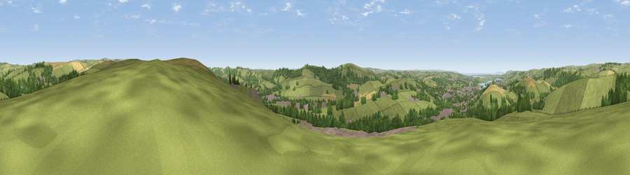

Viewpoint near Landkey
#11602 in England · top 24% of its area beats it · near LandkeyWhere it is
The exact computed spot (SS 59325 32675). Click the marker for map links.
The view, rendered

A 360° render of this exact spot computed from the terrain model, tree cover and land cover — summer colours, afternoon light, calibrated against photographs of famous viewpoints. Real trees, hedges and buildings will differ in detail.
The panorama
Grey silhouette: terrain skyline in each direction (720 bearings, Earth curvature and refraction included). Dashed green: skyline with trees (+15 m) and buildings (+8 m) as obstacles. Blue strip: how far the ground is visible on each bearing.
Where the view opens
Wedge length = distance to the farthest visible ground on that bearing (vegetation-aware). Rings at 10, 25 and 50 km.
What fills the view
66% grassland · 21% woodland · 7% cropland · 5% built-up ·
Angular shares of the visible panorama (visual magnitude), not map area. Landscape diversity 0.43 (0–1 Shannon).
Key numbers
More beautiful places nearby
The staircase of upgrades: each row has a higher view potential than everything closer. Driving times are estimates from straight-line distance, calibrated against real road routing — check an actual route before setting out.
| Place | Direction | Drive | Score |
|---|---|---|---|
| Viewpoint near Landkey | ESE · 1 km | ~2 min | 69.5 |
| Viewpoint near Landkey | S · 3 km | ~8 min | 74.0 |
| Codden Hill | SSW · 3 km | ~8 min | 81.3 |
| Viewpoint near Berrynarbor | NNW · 14 km | ~26 min | 81.8 |
| Holdstone Hill | N · 15 km | ~27 min | 90.2 |
| The Knoll | ESE · 104 km | ~129 min | 91.0 |
51.07611, -4.00948 · source: screening · position refined by local search. Computed location — check access rights before visiting.